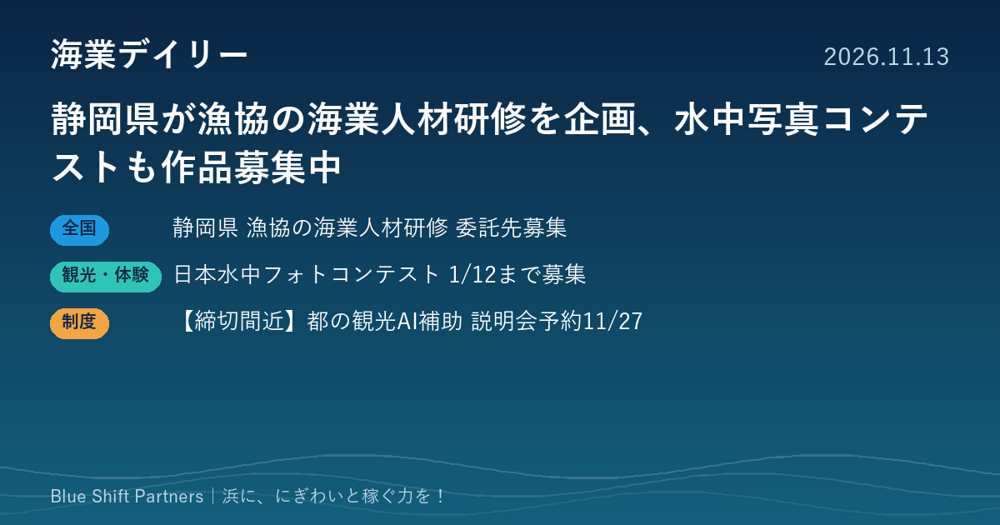

2026.11.13
静岡県が漁協の海業人材研修を企画、水中写真コンテストも作品募集中

静岡県は、漁協の直売所や飲食店など副収入事業を担う職員の確保・育成に向けたオンライン研修の委託先を募っています。ダイビングでは第4回「日本水中フォトコンテスト」が作品を受け付けています。東京都の観光AI補助金は、必須の個別説明会の予約締切が11月27日に迫っています。
静岡県、漁協の副収入事業を担う人材の研修を企画し、運営の委託先を募集（参加表明は11/30まで）
静岡県水産振興課は、漁協の直売所や飲食店、漁港のにぎわいづくり（海業）などの副収入事業を担う職員の確保・育成・定着を目的に、県内の漁協職員等を対象としたオンライン研修会を企画・運営する委託先を企画提案方式で募集しています。参加表明書は2026年11月30日（月）午後4時まで、企画提案書は12月7日（月）午後4時までに提出します。委託期間は契約締結日の翌日から2027年3月24日までで、契約は2027年1月中旬の予定です。参加資格や上限額などは募集要領で確認が必要です。
ここがポイント：海業を続けるには、直売所や食堂を回す人材が欠かせません。県が漁協の人材確保・育成そのものを研修のテーマに据えた点は、他の都道府県や漁協にとっても参考になります。
出典：静岡県 水産振興課「令和8年度漁協等人材獲得研修業務委託・企画提案の募集のお知らせ」（2026-11-13）
第4回「日本水中フォトコンテスト」、2027年1月12日まで作品を募集
日本水中フォトコンテスト実行委員会は、第4回コンテストの作品受け付けを2026年11月1日に始めました。対象は水中写真（半水面を含む）で、応募期間は2027年1月12日までです。グランプリ1点の賞金は50万円で、入賞は全43作品の予定です。応募はアマチュアに限り、応募料は1点1,000円（1人5点まで）で、結果は2027年4月3日に発表されます。
ここがポイント：ダイビングショップや漁協、観光協会にとっては、地元の海で撮った作品の応募を呼びかけることで、海の魅力を発信するきっかけになります。
出典：日本水中フォトコンテスト実行委員会（PR TIMES）（2026-11-02）
【締切間近】東京都「AI等先端技術を活用した受入環境高度化支援事業」、必須の個別説明会の予約は11/27まで
東京都産業労働局は、エリア単位で連携する観光関連事業者等がAI等の先端技術を導入し、観光地の高付加価値化を図る取組を支援しています。対象は2者以上の都内事業者で構成するグループで、機械設備導入費、システム等導入経費、専門家指導費が対象経費です。補助率は2分の1以内、上限は4,000万円です。申請は12月11日（金）必着（LoGoフォームまたは簡易書留）で、参加が必須の個別説明会の予約締切は11月27日（金）です。
ここがポイント：島しょ部や臨海部の宿・飲食店・体験事業者・観光協会がグループを組めば、多言語案内や予約・混雑対応などのデジタル化に使える可能性があります。申請を考えるなら、まず説明会の予約が必要です。
出典：東京都 産業労働局「AI等先端技術を活用した受入環境高度化支援事業」（2026-11-13）
海業の成否を分けるのは、施設よりも「回す人」です。静岡県の研修は、直売所や食堂の担い手を漁協がどう確保するかに正面から向き合う試みで、各地の参考になります。発信の面では、写真コンテストのような外部の場を地元の海の魅力を伝える機会として使うのも一つの手です。